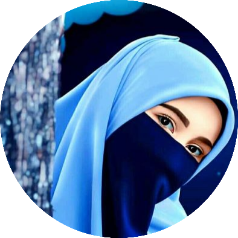

|  |
Ayesha Manzoor✨Student|Frontend Developer|Novelist|DesignerWish to become a successful web developer and gain skills to work in an organization that offers a creative, dynamic and Professional environment, where my education, training, professional skills and proven abilities can be fully applied.😍 |
| Program | Year | Institute | Marks/CGPA |
|---|---|---|---|
| Graduation | 2020-Current | Comsats University Islamabad, Lahore Campus | 3.40 |
| Intermediate | 2017-2019 | Punjab College Bahira Town, Lahore | 962 |
| Matric | 2015-2017 | Government Girls High School, Lahore | 1052 |
Junior Web developer: I worked as a junior web developer in this software house one month where I gained different skills. I solved different small tasks assigned by organization.
Business Developer (BD): I work as BD for local client.
ayeshamanzoor731@gmail.com